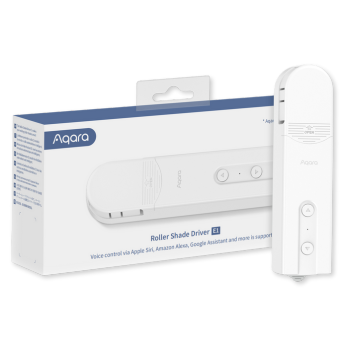

Roller Shade Driver E1
- Compatible with most commonly used 3rd party ecosystems such as Apple Home, Amazon Alexa, Google Home, IFTTT, Alice and Marusya.
- Adaptors are included to support different types of beaded cords
- Easy setup - simply attach the device to the wall, attach the appropriate cord adaptor, insert your roller shades beaded cord, and the device is ready for pairing.
2-Month Battery Life |
USB-C for Charging or Power Supply |
One-Button Control |
User-Defined Opening / Closing |

Product Info
Description
The Aqara Roller Shade Driver E1 is a hassle-free solution to automate your existing roller shades. Designed for easy setup, it simply attaches to your beaded cord—no complex installation or wiring needed. Operate it wirelessly on battery or plug it in with the included USB-C cable for continuous power. Convenient, simple, and smart.
Key Features
- Easy Setup: Mount to the wall, attach the adapter, and insert the beaded cord—quick and simple.
- Zigbee 3.0: Fast, stable, and energy-efficient connection with advanced compatibility.
- Wide Compatibility: Works with HomeKit, Alexa, Google, IFTTT, and more.
- Custom Settings: Pre-set open/close percentages for personalized light control.
- Long Battery Life: Up to 2 months on a single charge.
- USB Type-C: Charge or use continuous power with the versatile USB-C port.
- One-Button Control: Operate via Aqara app or Mini Switch.
- Smart Automations: Set up automations for independent operation.
- 4 Cord Adapters: Includes adapters for various beaded cords.
Note:
* Based on rolling/unrolling a Roller shade of 1.8m*1.8m once a day.
Specifications
| Category | Curtain Control |
| Colour | White |
| Model | RSD-M01 |
| Wireless Protocols | Zigbee 3.0 IEEE 802.15.4 |
| Dimensions | 42×37×165 mm (1.69×1.52×6.89 in.) |
| Operating Temperature | -10°C ~ 55℃ (14°F ~ 131°F) |
| Operating Humidity | 15% ~ 95% RH, no condensation |
| Ports | USB-C |
| Battery Type | Lithium battery (not replaceable) |
| Rated Input | 5V⎓1A |
| Total Power Consumption | 5W (MAX) |
| Standby Time | Two months (based on controlling a roller shade of 1.8m x 1.8m up and down once a day) |
| Standard | GB/T 12350-200 |
| What is in the Box | Aqara Roller Shade Driver E1 × 1, Screw × 2, Expansion Tube × 2, Double-Faced Adhesive Tape × 1, Spare Rotating Plate × 3, USB-C to USB-A Cable × 1 |
Gallery
|
 |
 |
| Front Image | Side Image | Product Box |
Automations and Complementary Products
Automatic Unrolling for Bright Sunlight:
When the afternoon sun becomes too bright and hot, the Temperature and Humidity sensor T1 detects the increase in heat and automatically unrolls the roller shade, enhancing your comfort and conserving cooling energy. In the evening, the roller shade opens automatically as the Door and Window Sensor recognizes your return home.
| Required Automation Products: | Roller Shade Driver E1 |
 Temperature and Humidity Sensor T1 |
 Door and Window Sensor T1 |
 Hub M3 |
Roller Shades Close for Bedtime
The Motion Sensor positioned above your bed detects when you're settling in for the night and triggers the Roller Shade Driver E1 to close your roller blinds, ensuring a more restful sleep.
| Required Automation Products: | Roller Shade Driver E1 |
 Presence Sensor FP2 |
Hub M3 |
Scheduled Roller Shade Adjustments
On weekday mornings, the roller shades automatically roll up just before you wake up for a pleasant start to your day. Conversely, they remain down during weekends, allowing you to enjoy a few extra hours of sleep.
| Required Automation Products: | Roller Shade Driver E1 |
Hub M3 |
Product Support Documents
- Step by step installation instruction video (runtime 00:03:44): Installation Video
- Product User Manual (format PDF): User Manual
- Product FAQs (format PDF): Frequently Asked Questions